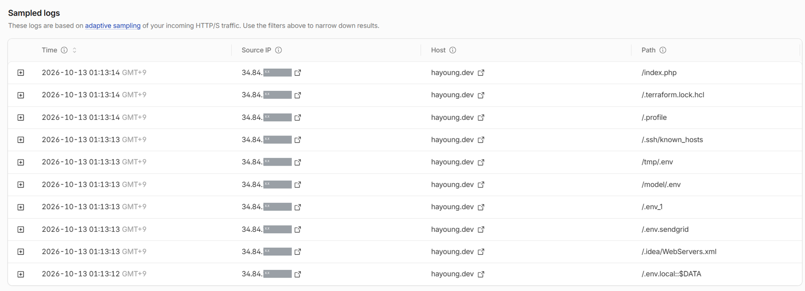

1. 위험은 연결되는 순간부터 시작됩니다
주소를 알리지 않은 이 사이트에, 연결 다음 날 새벽 한 해외 IP가 1~2초 사이 서버 비밀번호와 API 키가 담긴
설정 파일(.env, .ssh, .terraform 등)을 연달아 찾았습니다.
로그를 근거로 숨김 파일 경로를 막는 규칙을 추가하고, 인증서 발급에 쓰이는 /.well-known/ 경로는
예외로 두어 정상 동작까지 확인했습니다.
